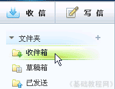
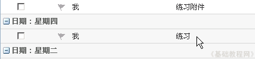
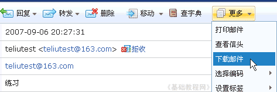
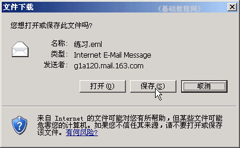
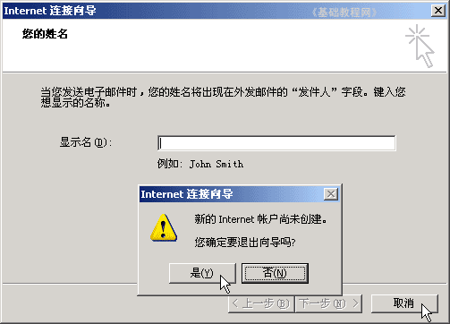

电子邮箱基础入门教程
五、下载邮件 返回
有一些重要的邮件，需要下载到自己的机子里，邮件的文件格式一般是eml格式，图标是一个小信封，下面我们来看一个练习；
1、登录邮箱
1）在浏览器地址栏输入网址：http://mail.163.com，按回车键或者点“转到”就可以进入邮箱首页；
2）在右边的登录框里，依次输入用户名和密码，然后点“登录邮箱”按钮；
2、下载邮件
1）进入邮箱页面后点左边的“收件箱”按钮，进入收件箱页面；

2）点击第一次写的“练习”主题，打开这封邮件；

3）在阅读页面上边的菜单中，找到最后的“更多”链接，点击出来一个下拉列表；

4）点击“下载邮件”菜单，出来一个下载对话框，点“保存”按钮，找到自己的文件夹，然后点保存就可以了；

然后到自己的文件夹中，就可以看到一个信封图标的文件，双击以后可以用outlook Express打开；
如果出来连接向导设置，点“取消”－“是”即可；

本节学习了下载邮件的基本方法，如果你成功地完成了练习，请继续学习下一课内容；
本教程由86团学校TeliuTe制作|著作权所有
基础教程网：http://teliute.org/
美丽的校园……
转载和引用本站内容，请保留版权信息和本站链接。